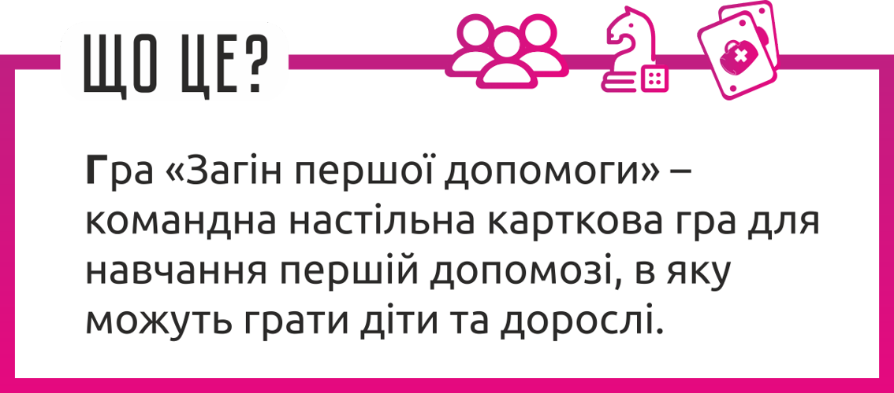
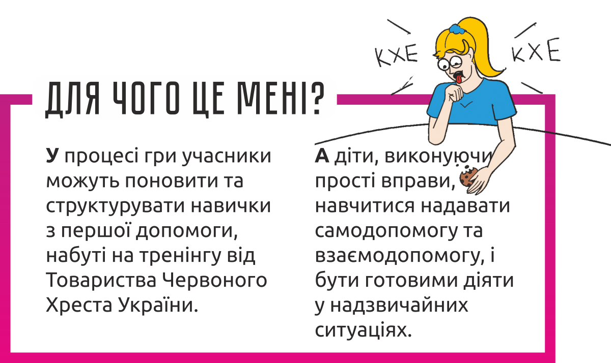

Загін першої допомоги онлайн
- це web-версія настільної карткової гри "Загін першої допомоги".
Із допомогою яскравих карток ти можеш перевірити свої знання щодо надання першої допомоги.
Перш за все гра спрямована на дітей, але й дорослі теж можуть отримати задоволення від неї.
Звісно, краще грати командою, зібравшись разом. Але якщо наразі такої можливості немає,
можна зіграти самому.
За допомогою відповідей на прості питання легше запам'ятати, що робити в тих чи інших обставинах.
А ілюстрації допоможуть запам'ятати це ще краще. То ж вперед - на зустріч загону першої допомоги!
Що таке настольна гра "Загін першої допомоги", та для чого вона мені?


Чим "Загін першої допомоги онлайн" відрізняється від своєї оффлайн версії?
Оригінальна карткова гра, як і тренінги з першої допомоги, спрямована насамперед на набуття або відпрацювання навичок надання першої допомоги.
Проте формат онлайн гри не передбачає виконання практичних завдань через відсутність контакту, контролю, та можливості швидко перевірити відповідь кожного.
Тож залишається тільки виконувати теоретичні завдання. Якщо ви бажаєте відпрацювати навички, реєструйтеся на наші тренінги з першої допомоги.
Посилання на форму реєстрації ви зможете знайти у навігаційній панелі.
Наразі в онлайн версії гри немає можливості грати разом з кимось або проти когось. Але ми сподіваємося, що додамо цю можливість у найближчий час.